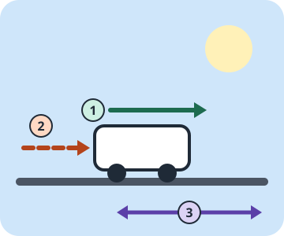

Inerzia
Perché un oggetto continua a muoversi, o resta fermo, se nessuna forza lo cambia.
Esplora la prima leggeScopri come un'idea sul moto ha cambiato il mondo.
Tre leggi, poche righe in un libro del 1687, e ancora oggi spiegano perché una palla si ferma, come accelera un'auto e come vola un razzo. Qui le scopri sperimentando, prima di vedere le formule.

Perché un oggetto continua a muoversi, o resta fermo, se nessuna forza lo cambia.
Esplora la prima leggeCome forza e massa decidono quanto cambia la velocità: la forma moderna è F = m·a.
Esplora la seconda leggePerché le forze nascono sempre in coppia, e come fa un razzo a spingersi nel vuoto.
Esplora la terza leggeOgni simulazione si usa anche solo con la tastiera, ha una descrizione testuale aggiornata in tempo reale e una tabella dati alternativa ai grafici. Se il tuo sistema chiede di ridurre il movimento, le simulazioni partono in pausa.